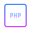
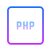
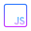
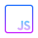

Обо мне
Зовут меня Владимир Банденков. Я начинающий веб-разработчик из Навашино. Студент Муромского института (филиал) федерального государственного бюджетного образовательного учреждения высшего образования «Владимирский государственный университет имени Александра Григорьевича и Николая Григорьевича Столетовых» по направлению Программная инженерия. Во время учебы изучаю такие языки как HTML, CSS, JavaScript, C#. В своей работе я придерживаюсь методологий адаптивного и респонсивного дизайна. При разработке уделю большое внимание доступности, валидности и оптимизации кода. Считаю, что качественный дизайн играет немаловажную роль в восприятии пользователем. Моя цель - создавать практичные и инновационные проекты, которые облегчают жизнь людей. Люблю постоянно совершенствовать свои навыки и узнавать что-то новое. Помимо веб-разработки, увлекаюсь игрой на гитаре. В свободное время люблю читать техническую литературу и смотреть видео на YouTube о frontend-разработке.
Навыки программирования


 

 
